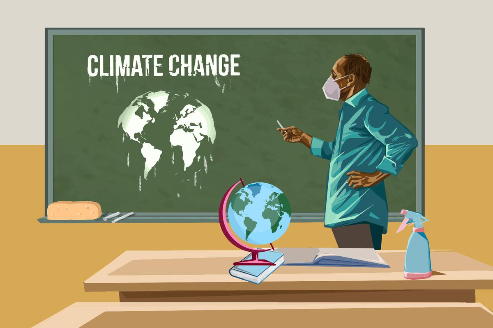

Rješenja Klimatskih Promjena
Borba protiv klimatskih promjena zahtijeva zajedničke napore na globalnoj, nacionalnoj i lokalnoj razini. Prelazak na obnovljive izvore energije, kao što su solarna, vjetroelektrična i hidroelektrična energija, ključan je korak prema smanjenju emisija stakleničkih plinova. Ove tehnologije ne samo da smanjuju emisije, već i potiču energetsku sigurnost i stvaranje novih radnih mjesta u zelenim industrijama.

Promicanje energetske učinkovitosti u zgradama, industriji i transportu također može značajno smanjiti potrošnju energije i emisije CO2. Uvođenje strožih propisa i poticaja za korištenje čistijih tehnologija može potaknuti industrije na usvajanje zelenijih praksi. Primjeri uključuju izolaciju zgrada, energetski učinkovite aparate i električna vozila.
Povećanje svijesti javnosti i edukacija o klimatskim promjenama također su važni. Svaka osoba može doprinijeti smanjenju svog ugljičnog otiska kroz promjene u načinu života, kao što su smanjenje potrošnje mesa, korištenje javnog prijevoza i recikliranje. Edukacija o održivim praksama i poticanje na odgovorno ponašanje može imati dugoročne pozitivne učinke na okoliš.
Međunarodna suradnja je također ključna za rješavanje klimatskih promjena. Globalni problemi zahtijevaju globalna rješenja, a međunarodni sporazumi poput Pariškog sporazuma igraju vitalnu ulogu u koordiniranju napora za smanjenje emisija. Države moraju surađivati kako bi osigurale pravednu i učinkovitu provedbu mjera za ublažavanje klimatskih promjena.